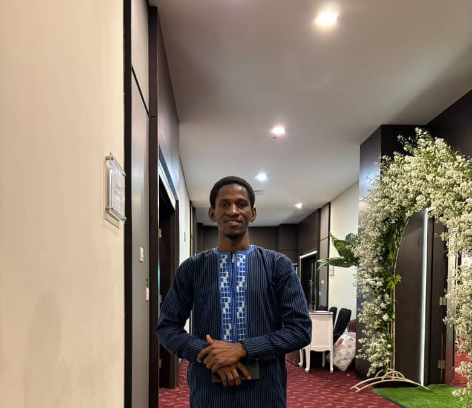

Bienvenue sur Mon Portfolio
Bonjour, je m'appelle Thierno Abdoulaye Balde, un professionnel passionné et engagé à promouvoir le leadership chez les jeunes Guinéens. Installé à Malang, en Indonésie, je mets à profit mon expertise en finance, gestion d’entreprise et stratégie pour avoir un impact positif à l’échelle nationale et internationale.
Parcourez les différentes sections pour découvrir mon parcours, mes compétences et mes projets.